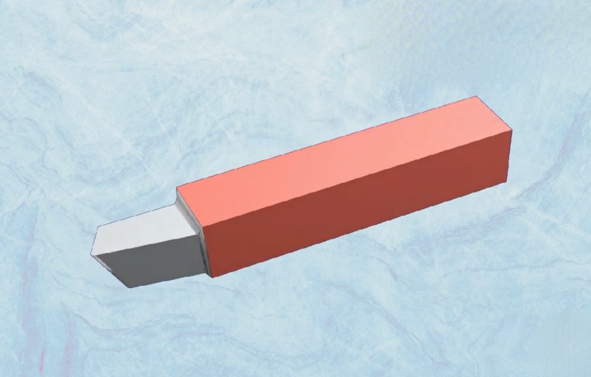
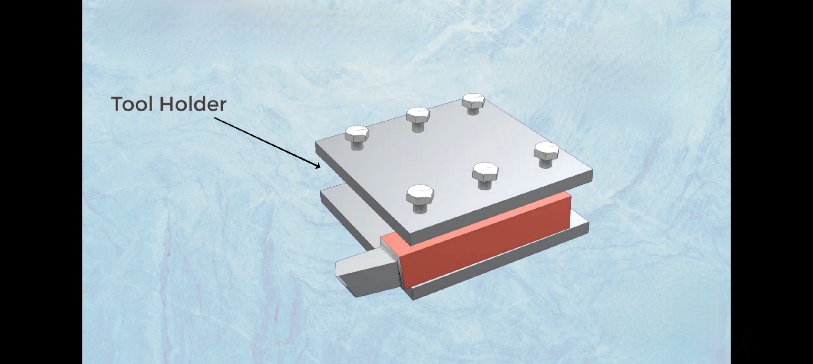
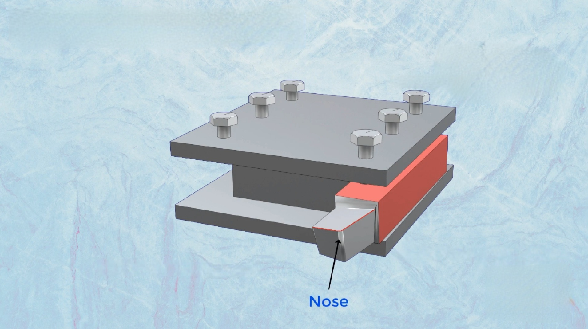
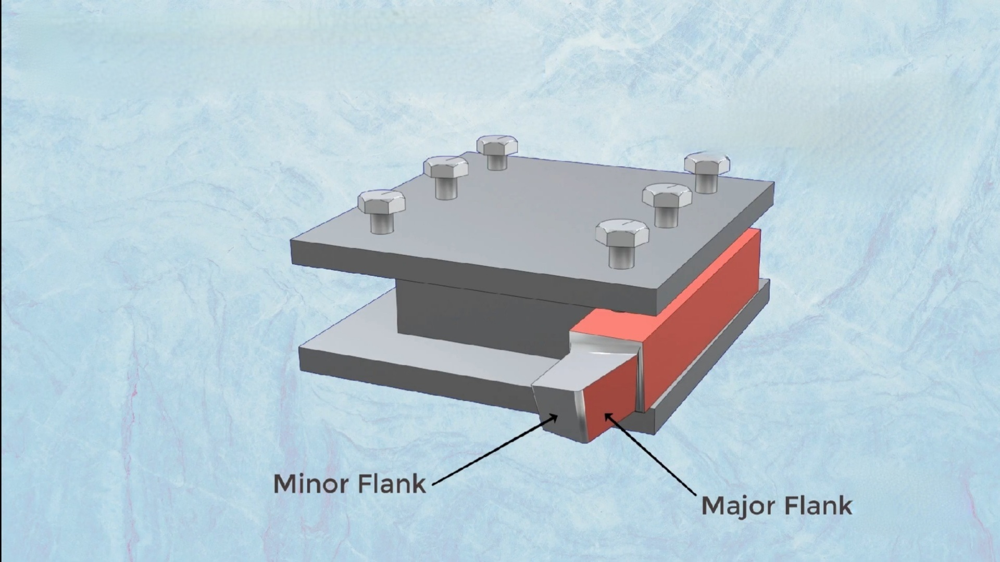
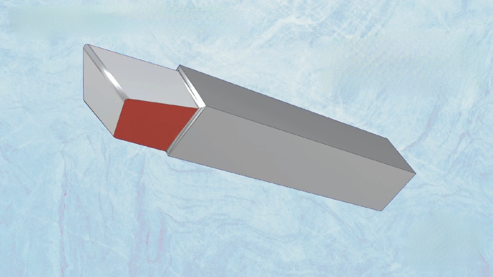
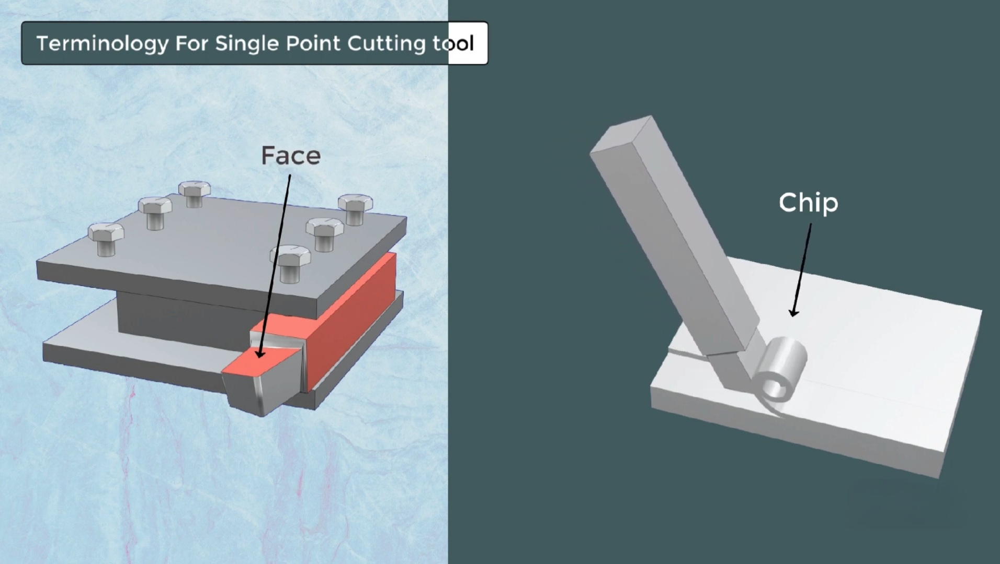

Single Point Cutting Tool Geometry

But first get an overall idea
Cutting Tools
- Cutting tools are used to remove excess layers of material in the form of chip from a workpiece by shearing during machining to obtain the desired shape, size, and accuracy.
- the purpose of cutting tool is to compress a particular layer of work material in order to shear it off
Classification of Cutting Tools w.r.t number of cutting point
- Single point cutting tools.
- Multi point cutting tools.
The desired form of the material will determine what type of tools you'll need for the job.
Single point cutting tool
- One cutting point or tip is available.
- The Tool terminates in a single point.
- Single point tools are used for turning, boring, etc.
Multi Point cutting tool
- More than One cutting point or tip is available to remove excess materials
- multi-point tools are used for milling , drilling, grinding.
Geometry of Single Point Cutting Tool
SHANK
 Shank is the main body of the cutting tool which is grabbed by the tool holder on the machine
CUTTING EDGES

It is the edge on the face of the tool which removes the material from the workpiece.
NOSE

it is the point of intersection of side cutting edge and end cutting edge.
FLANK
surface below and adjacent to the cutting edge is called flank of the tool.
BASE
The bottom surface of the tool is known as the base.
FACE
The top surface tool on which chips slides after cutting is known as a face.
Geometry Of Single Point cutting tool

A general Overview of tool Geometry

PLANES
Reference PLane

Longitudinal PLane

Y plane PLane

CUTTING ANGLES


Cutting Angles are measured in Reference Plane
RAKE ANGLES

BACK RAKE ANGLES

SIDE RAKE ANGLES